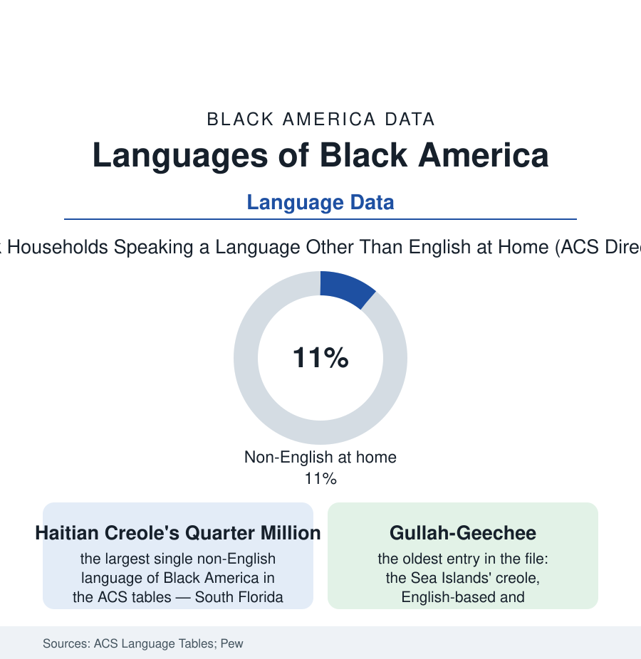

Black Census
The Language File: What Black America Speaks at Home
The census language tables hold a multilingual Black America — Creole in the kitchen, Spanish in the Bronx, French in the parish, Gullah on the coast. The language file.

Ask the census what language is spoken at home and Black America answers in a chorus the monolithic category hides: Haitian Creole by the hundreds of thousands, Spanish across the Afro-Latino millions, French in Louisiana's parishes and the francophone African suburbs, Amharic and Somali and Yoruba in the immigrant enclaves — and beneath them all, the homegrown creoles of the Sea Islands and the Gulf. This article reads the language file.
The Immigrant Tongues
The ACS language tables sort the Black population's households into a linguistic map that tracks the immigration file precinct by precinct: Haitian Creole the largest single non-English language of Black America in the count (its quarter-million-plus speakers concentrated in the South Florida and New York-New Jersey-Boston corridors in the survey geography — a speech community complete with its media file, its churches preaching in Creole, its ballot materials printed by law in the counties where the voting file requires them), French beside it from the same island's other register and from francophone Africa's newer streams; Spanish the second great language — the Afro-Latino households of the Hispanic file, their bilingualism the ACS's 'English plus another language' rows' largest Black component, the Bronx and Orlando and Houston tables recording a Black America for whom the home language is the one the Dominican grandmother enforces; the African languages' long table (Amharic of the Washington file's Ethiopian community, Somali of Minneapolis and Columbus, the Yoruba and Igbo of the Nigerian professional diaspora, Twi, Wolof, Swahili) each small in the national count and total in its enclave — the language-maintenance data showing the classic three-generation slope in the immigrant rows (the grandparents' tongue full, the parents' bilingual, the children's English-dominant with the heritage language receptive) against which the community's Saturday schools and the churches' language policies push with documented partial success. The services file follows the tongues: the hospitals' interpreter data, the courts', the schools' home-language surveys — the federal language-access machinery meeting a Black population its outreach had pictured as English-only.
The Homegrown Creoles
The census itself has had to learn the file's lesson: the modern count arrives with language assistance in dozens of tongues, its guides and glossaries printed for the Creole and Spanish and Amharic households of this article, its partnership specialists recruited from the enclaves — the undercount file's hardest households being, disproportionately, the ones for whom the form's first language is not the kitchen's. The count's accuracy, in other words, is partly a translation budget — one more place where the atlas's subject turns out to be the instrument itself.
Older than every immigrant stream in the file are the creoles America grew itself. Gullah-Geechee, the English-based creole of the Sea Islands and the coastal corridor from Jacksonville to Wilmington, stands in the linguistic record as the most African-retentive speech in North America — its grammar and its thousands of African-derived words documented by scholars since the 1940s (Lorenzo Dow Turner's foundational Africanisms study built substantially on Gullah speakers), its speakers' history the rice coast's own: the isolation of the island plantations preserving what the mainland's pressures eroded. Its modern data are the preservation file's: a speaker population the estimates put in the low hundreds of thousands with varying fluency, the Corridor commission's federal recognition, the language's appearance in the courts' interpreter lists and the schools' dialect debates beside its cousin of the education file (the AAE article carries the mainland vernacular; the creoles are its island and delta kin — Louisiana Creole French, dying and documented in the same breath in the parish records, its last fluent generations counted by the linguists like a census of lighthouses). The file's argument is the atlas's recurring one in linguistic form: the category 'Black American' contains nations of speech, and the instruments that flatten them — the survey's single race box over a Creole-speaking household, the school form's one language line — systematically under-read the population they count. The translators, the Saturday schools, and the grandmothers are correcting the record one kitchen at a time, in four languages at once.
Reading the Language Data
The language file is the census section's ear: the population not as it is counted but as it sounds — at the table, in the pew, on the phone to Port-au-Prince and Santo Domingo and home. The ACS publishes the tables. The kitchens publish the living edition, nightly, in every tongue the diaspora brought and two it invented here.
More in Black Census
The Black Population of the United States: Size, Definitions, and Distribution
The Black population of the United States totals 52.8 million — 15.4 percent of the nation. How the Census Bureau defines and counts the population, and where it lives.
Black Median Household Income in the United States
Black median household income stands at $56,490 in the Census Bureau's annual income report — how the figure is measured, how it compares, and what drives it.
The Black Poverty Rate: Levels, Children, and the Long Trend
The official Black poverty rate is 17.1 percent — against 11.1 percent nationally and 7.7 percent for non-Hispanic White Americans. How poverty is measured and what the data show.
Source: U.S. Census Bureau American Community Survey language tables; Pew Research Center Hispanic and immigrant studies; Linguistic Society of America documentation; Georgetown and Smithsonian language archives.